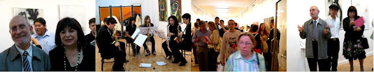

Inauguración del Centro O+O 25/05/2007
viernes, 25 de mayo de 2007
{kind=link}

El acto tuvo lugar en la sede de la Galería el 25/05/1007 a las 20 horas, con numerosa asistencia de público e intervinieron el mismo el Ilmo. Sr. Don Román de la Calle, director del Museo MUVIM de Valencia, la directora del proyecto Doña Enriqueta Hueso, así como distintas personalidades asistentes al acto, en la exposición inaugural participaron los artistas: Carolina Coronado, Paloma Delbreil, Edu Larrasa, Javier Sánchez Rubio, Francesc Crespo, Ernesto de Salas, Marcos René Sánchez Kishor, Helena Zapke, Mariano Luque, y Joäo Nuno....

GESTIÓN CULTURAL O + O
Las aventuras culturales tienen tanto de reto sostenido y de esfuerzo idealista como de ilusión compartida y de osadía real. Tal sucede en esta ocasión con el ambicioso proyecto puesto en marcha bilateralmente entre Valencia y Keelung (Taiwán), a cargo de una inquietante soñadora Enriqueta Hueso.
Se inicia ahora esta experiencia de Gestión Cultural O + O con la puesta en marcha de la sede valenciana, a la que seguirá luego la apertura del centro taiwanés. Con ello, de hecho, se asegura uno de los principales objetivos de tal aventura: la de fomentar los intercambios culturales entre dos ámbitos llamados ineludiblemente a convivir, a pesar de las distancias geográficas y culturales, hoy cada vez más minimizadas por las nuevas tecnologías y la globalización. Oriente y occidente devienen, cada vez más, las dos caras de una misma moneda: se diferencian pero no pueden, a pesar de todo, dejar de estar íntimamente relacionadas.
Se trata, pues, de la inauguración de un centro con vocación claramente internacional, de carácter mixto, donde cultura y mercado irán también lógicamente de la mano: a través de la conformación de una editorial de carpetas de grabado, con una revista de arte y cultura, con la organización de talleres y seminarios, con el intercambio de artistas y obras itinerantes en muestras acompañadas del correspondiente catálogo, así como la potenciación de la imprescindible página Web y otras tecnologías de la información.
Gestión Cultural O + O inicia su andadura, pues, con máxima ambición y esperemos que esa estratégica suma de gestión y de creación, de la que quieren operativamente partir, dé pronto sus primeros y constatables frutos, con el fin de que, gracias a esa inmediatez de aportaciones, puedan reforzarse tanto la autoestima personal como la comprobación / validación de sus concretos objetivos.
Justo es asimismo desear que el centro, que con tanta ilusión ahora nace y comienza a caminar, se convierta en un eficaz punto de encuentro entre artistas y otros protagonistas del hecho artístico contemporáneo, tan plural, amplio y diversificado.
Por otra parte, teniendo en cuenta el perfil indiscutiblemente particular y específico del proyecto atendiendo, con prioridad, al diálogo intercultural entre oriente y occidente, entre China y España hay que reconocer que es, sin duda, éste un momento histórico definitivo y determinante, el que estamos viviendo contemporáneamente, para abordar tal camino, en los inicios del siglo XXI.
Vayan, por tanto, por delante nuestros mejores augurios, a la vez que solicitamos la colaboración y el respaldo para esta andadura, de cuantas personas e instituciones estén interesados en este nudo de proyectos, de cara al futuro, siempre prometedor.
La suerte está echada. ¡Ojalá podamos hacer un positivo balance de lo conseguido en la celebración del primer trienio de su existencia! A esa cita quedamos todos ilusionadamente convocados.
Sirvan estas palabras asimismo para la presentación de la primera muestra de una docena de artistas españoles y portugueses, que quiere ser una especie de significativa tarjeta de presentación del proyecto. A unos y otros, nuestra felicitación y aliento.
Valencia, mayo del 2007.
Román de la Calle
Innovaciones de Educativas Universitat de Valencia Estudi general
Director del Museo MUVIM de Valencia